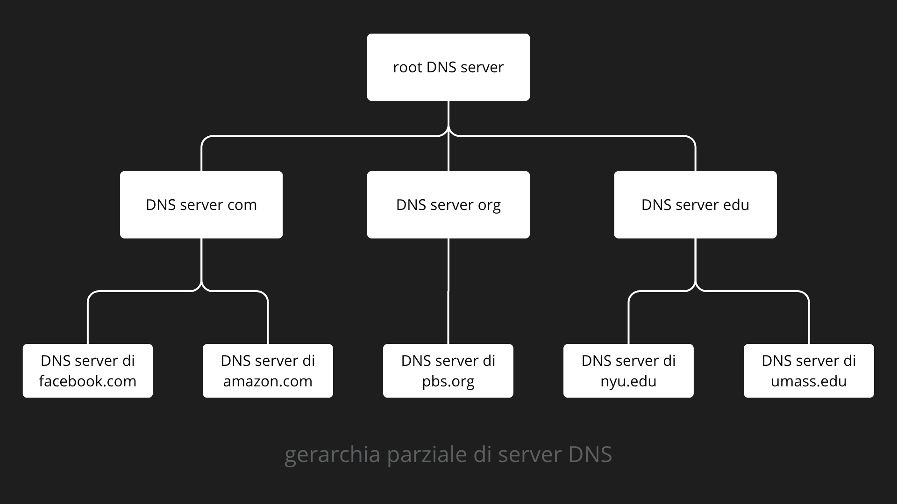
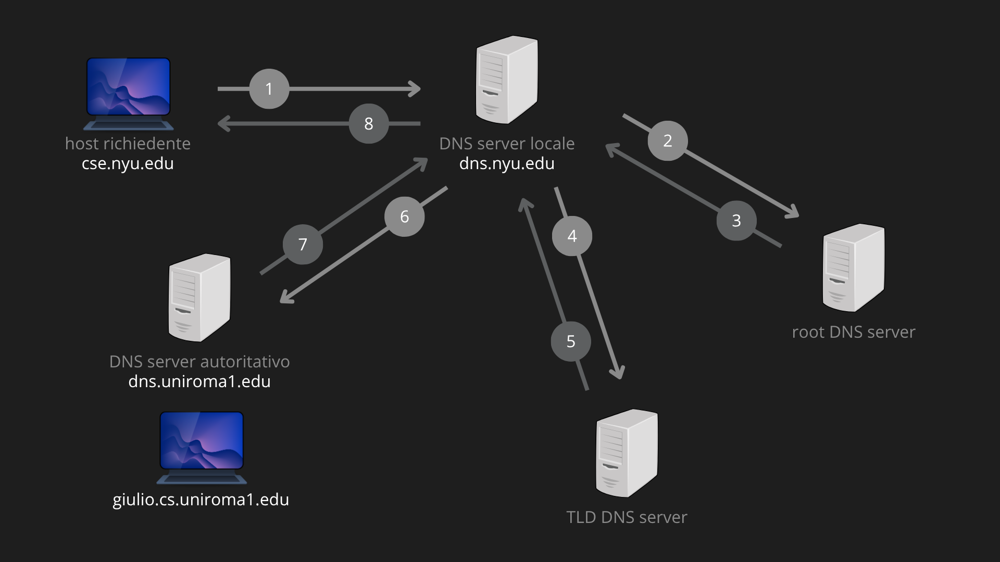
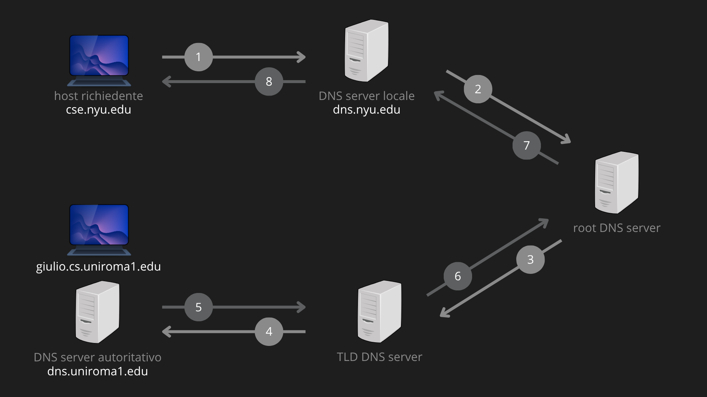
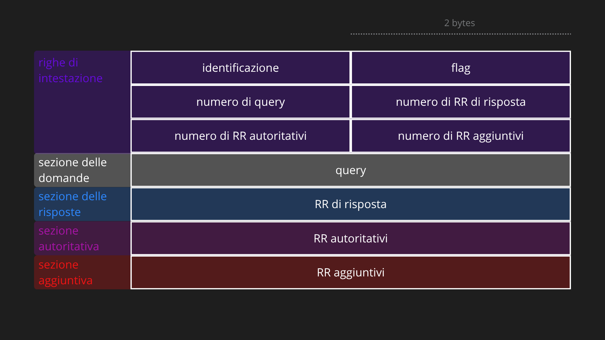

Gli host Internet possono essere identificati in due modi distinti: tramite hostname (es. www.google.com), comprensibili agli esseri umani ma difficili da elaborare per le macchine, e tramite indirizzi IP (es. 121.7.106.83), strutturati in 4 byte con gerarchia da sinistra a destra, preferiti dai router per via della loro lunghezza fissa e natura gerarchica. Il Domain Name System è un’applicazione di servizio (o infrastrutturale) che nasce per tradurre gli uni negli altri, conciliando le esigenze umane con quelle dei sistemi di rete.
DEFINIZIONE
Il DNS (Domain Name System) è contemporaneamente:
- un database distribuito, implementato come gerarchia di server DNS;
- un protocollo a livello di applicazione, che regola la comunicazione tra host e server DNS.
Il protocollo DNS utilizza UDP sulla porta 53. I server DNS girano tipicamente su macchine UNIX con il software BIND (Berkeley Internet Name Domain). DNS viene comunemente utilizzato da altri protocolli a livello di applicazione, tra cui HTTP e SMTP, per tradurre i nomi di host forniti dall’utente in indirizzi IP. Per esempio:
Example
Consideriamo che cosa succede quando un browser (ossia un client HTTP) in esecuzione sull’host di un utente richiede l’URL http://github.com/drizzzyDrake/PublicNotes. L’host dell’utente, per essere in grado di inviare un messaggio di richiesta HTTP al web server
github.com, deve come prima cosa ottenere il suo indirizzo IP. Ciò avviene come segue:
- La stessa macchina utente esegue il lato client dell’applicazione DNS.
- Il browser estrae il nome dell’host,
github.com, dall’URL e lo passa al lato client dell’applicazione DNS.- Il client DNS invia una interrogazione (query) contenente l’hostname a un DNS server, incapsulando il messaggio in un datagramma UDP inviato alla porta destinazione 53.
- Il client DNS riceve una risposta, sempre tramite protocollo UDP sulla porta 53, che include l’indirizzo IP corrispondente all’hostname.
- Una volta ricevuto l’indirizzo IP dal DNS, il browser può dare inizio a una connessione TCP verso il processo server HTTP collegato alla porta 80 di quell’in dirizzo IP.
N.B. Da questo esempio vediamo che il DNS introduce un ritardo aggiuntivo, talvolta sostanziale, alle applicazioni Internet che lo utilizzano. Fortunatamente, come vedremo più avanti, l’indirizzo IP desiderato si trova spesso nella cache di un DNS server vicino, il che aiuta a ridurre il traffico DNS in rete e il ritardo medio del servizio.
Perchè DNS utilizza UDP e non TCP?
- Minore overhead: UDP non richiede handshake.
- Messaggi brevi: le query e risposte DNS sono tipicamente piccole.
- Nessun setup di connessione: nella risoluzione ricorsiva/iterativa si contattano diversi server in sequenza; usare TCP richiederebbe stabilire una connessione separata per ogni coppia, moltiplicando i tempi.
- Gestione dei timeout a livello applicativo: se una query non ottiene risposta entro un timeout, il resolver (DNS server locale) la rinvia autonomamente.
In breve, la scelta di utilizzare UDP, si basa sull’efficienza temporale delle connessioni.
SERVIZI FORNITI DAL DNS
Oltre alla funzione principale di traduzione hostname → indirizzo IP, il DNS offre:
Host aliasing
Un host può avere uno o più nomi alias, oltre a un unico nome canonico (quello reale e registrato nel sistema). Gli alias sono solitamente più mnemonici o riflettono funzioni specifiche del server. Il DNS viene interrogato per ottenere il nome canonico e l’indirizzo IP corrispondente a partire da un alias.
Example
Riprendendo l’URL
http://github.com/..., il nomegithub.comè in realtà un alias. Internamente, l’infrastruttura di GitHub potrebbe rispondere a un nome canonico comegithub.map.fastly.net. Quando il browser interroga il DNS pergithub.com, il server DNS restituisce:
- Il nome canonico (
github.map.fastly.net)- L’indirizzo IP associato (es.
140.82.121.4)
Questo permette all’azienda di cambiare server o fornitore di rete senza che l’utente debba cambiare l’URL che digita.
Mail server aliasing
Il DNS permette a un’organizzazione di avere nomi di dominio identici per il sito web e per il server di posta, ma di instradare il traffico verso macchine fisicamente diverse tramite i record MX (Mail Exchanger). Questo servizio garantisce che le email raggiungano il server dedicato alla posta anziché il web server.
Example
Supponiamo che tu voglia inviare un’email a
support@github.com. Anche se l’host è lo stesso del sito web (github.com), il tuo client di posta chiederà al DNS il record MX per quel dominio. Il DNS risponderà che il server delegato a gestire la posta per GitHub è, ad esempio,aspmx.l.google.com. In questo modo, il traffico HTTP (sito) va su un server, mentre il traffico SMTP (email) va su un altro, pur usando lo stesso suffisso.
Distribuzione del carico (Load distribution)
Il DNS viene utilizzato per ripartire il traffico tra vari server replicati. A un singolo nome canonico vengono associati più indirizzi IP. Ogni volta che un client invia una query, il DNS risponde con l’intero insieme di IP, ma ne ruota l’ordine (Round Robin).
Example
Quando migliaia di utenti cercano di accedere contemporaneamente a
github.com, il server DNS autoritativo possiede una lista di IP (es.140.82.121.3,140.82.121.4,140.82.121.5)
- Al primo utente risponde con la lista:
[.3, .4, .5]- Al secondo utente risponde con la lista ruotata:
[.4, .5, .3].ùPoiché i client solitamente tentano la connessione verso il primo IP della lista, le richieste vengono distribuite equamente tra i vari server della “server farm”, evitando il sovraccarico di una singola macchina.
GERARCHIA DEI SERVER DNS
Il DNS è progettato come un sistema gerarchico ad albero distribuito su svariati server, esempio eccellente di database distribuito su Internet:

Example
Il client vuole ottenere l’indirizzo IP dell’host www.amazon.com:
- Viene contattato il server DNS locale dell’ISP di riferimento. Se il nome non viene risolto, si procede col passo successivo.
- Viene contattato il root server per trovare l’indirizzo IP del server TLD
.com.- Viene contattato il server TLD
.comper trovare l’indirizzo IP del server autoritativoamazon.com.- Viene contattato il server autoritativo
amazon.comper trovare l’indirizzo IP dell’host www.amazon.com.
Perché un'architettura con un unico DNS server centralizzato sarebbe impraticabile?
- singolo punto di fallimento: un guasto blocca l’intera Internet,
- volume di traffico: un solo server non può gestire migliaia di miliardi di query al giorno (es. solo Comcast genera 600 miliardi di query DNS/giorno) e non può mantenere il mapping di tutti gli IP possibili (un IP corrisponde a 32 bit, dunque 232 IP possibili),
- distanza dai client: latenze inaccettabili per utenti geograficamente lontani,
- manutenzione: aggiornare miliardi di record su un unico database è impossibile.
Root server
Sono 13 server logici (13 indirizzi IP “ufficiali”) nominati dalle lettere A alla M (gestiti da 12 diverse organizzazioni sotto supervisione ICANN) e replicati su centinaia di server fisici distribuiti nel mondo. Rappresentano il punto di contatto di ultima istanza per i server che non riescono a risolvere un nome. I loro indirizzi IP sono hardcoded nei resolver. Forniscono gli indirizzi IP dei server TLD.
Info
Questo limite storico nel numero di server è dovuto alla dimensione massima di un pacchetto UDP originale (512 byte). Ogni riferimento a un Root Server (composto da nome a dominio e indirizzo IP) occupa circa 32 byte. Moltiplicando 32 per 13, e aggiungendo i dati obbligatori dell’intestazione del messaggio, si arriva a saturare quasi completamente il limite di 512 byte del protocollo UDP. Inserire un 14° server avrebbe ecceduto lo spazio disponibile, causando il troncamento dei dati e rendendo impossibile la navigazione per i sistemi più vecchi.
Server Top-Level Domain (TLD)
Gestiscono i domini di primo livello generici (.com, .org, .net, .edu, .gov) e nazionali (.it, .uk, .fr, .jp, ecc.). Ad esempio, l’azienda Verisign gestisce .com e .net mentre Educause gestisce .edu. Forniscono gli indirizzi IP dei server autoritativi.
Server DNS autoritativi
I server autoritativi sono i contenitori ufficiali dei record DNS di un dominio. Sono i server finali nel processo di risoluzione DNS, contenenti gli indirizzi IP di un dominio specifico e forniscono la risposta definitiva ai dispositivi che cercano di raggiungere quel sito. Possono essere gestiti direttamente dall’azienda o delegati a un provider esterno. Per sicurezza ne esistono solitamente due (primario e secondario) così che, se uno si guasta, l’altro continua a rendere il sito raggiungibile.
Server DNS locali
Detti anche resolver locali, non appartengono strettamente alla gerarchia, ma sono centrali nell’architettura DNS. Ogni ISP (aziendale, universitario, residenziale) ne possiede uno, detto anche default name server. Quando un host effettua una query DNS, questa viene inviata al server locale, il quale:
- mantiene una cache locale delle mappature recenti;
- funge da proxy, inoltrando la query nella gerarchia se il nome non è in cache.
Ogni volta che un server DNS viene a conoscenza di una mappatura, essa viene memorizzata all’interno della cache locale, utilizzando tali record per rispondere a query future. I record presenti nella cache vengono cancellati allo scadere di un TTL (Time-to-live) o a seguito di un comando manuale. Solitamente, all’interno della cache dei server DNS locali sono presenti i server TLD più comuni, implicando che il root server venga interrogato raramente.
RISOLUZIONE DI UN NOME
Quando un’applicazione (es. browser) deve tradurre un hostname, invoca la funzione di sistema (es. su UNIX gethostbyname()), che attiva il client DNS. Quando un host effettua una richiesta DNS, la query viene inviata al DNS server locale, che opera da proxy e inoltra la query alla gerarchia dei DNS server (la query viaggia su datagrammi UDP verso la porta 53):
Query iterativa
Nel metodo iterativo, il server DNS locale agisce come un coordinatore attivo e instancabile. Dopo aver ricevuto la richiesta dall’utente, il server locale si fa carico di contattare personalmente ogni livello della gerarchia DNS (root, TLD e autoritativo). Ogni volta che interroga un server superiore, riceve come risposta non l’indirizzo finale, ma un suggerimento su quale sia il prossimo server a cui rivolgersi. È un processo in cui il server locale mantiene il controllo totale dell’operazione, effettuando più viaggi (query) finché non ottiene l’indirizzo IP definitivo da comunicare all’host richiedente.

Example
Esempio per risolvere
giulio.cs.uniroma1.edudacse.nyu.edu:
- L’host
cse.nyu.eduinvia la query al proprio server localedns.nyu.edu, il messaggio contiene il nome da tradurre, ossiagiulio.cs.uniroma1.edu(unica query ricorsiva).- Il server locale
dns.nyu.eduinterroga un root server. Quest’ultimo prende nota del suffisso.edue restituisce al server locale un elenco di indirizzi IP per i TLD server responsabili di edu.- Il server locale
dns.nyu.eduinterroga uno dei TLD.edudella lista. Il TLD server interrogato prende nota del suffissouniroma1.edue risponde con l’indirizzo IP del server autoritativo per la Sapienza, ossiadns.uniroma1.edu.- Il server locale
dns.nyu.edurimanda la query direttamente al server autoritativodns.uniroma1.edu, che risponde con l’indirizzo IP digiulio.cs.uniroma1.edu.In totale: 8 messaggi (4 query + 4 risposte).
Query ricorsiva
Nel metodo ricorsivo, la responsabilità della ricerca viene completamente delegata lungo una catena gerarchica. Quando l’host invia la richiesta al server DNS locale, quest’ultimo non si limita a chiedere un suggerimento, ma “scarica” il compito sul server successivo (ad esempio il root server), restando in attesa. Ogni server nella catena fa lo stesso, comportandosi come un cliente verso il server di livello superiore, finché la richiesta non raggiunge il server autoritativo. Una volta trovato l’indirizzo, la risposta torna indietro percorrendo a ritroso tutta la catena dei server, che rimangono impegnati a mantenere la connessione aperta fino alla conclusione del processo.

Example
Esempio per risolvere
giulio.cs.uniroma1.edudacse.nyu.edu:
- L’host
cse.nyu.eduinvia la query al proprio server localedns.nyu.edu.- Il server locale, non avendo l’indirizzo in cache, interroga il root server.
- A differenza del metodo iterativo, il root server non risponde con un indirizzo IP, ma si fa carico della richiesta e interroga lui stesso il TLD server per
.edu.- Il TLD server, a sua volta, inoltra la query al server autoritativo
dns.uniroma1.edu.- Il server autoritativo fornisce la risposta finale (l’IP di
giulio.cs.uniroma1.edu) al TLD server.- La risposta risale la catena: dal TLD al root server, dal root server al server locale, e infine dal server locale all’host richiedente.
In totale: 8 messaggi (4 query + 4 risposte), ma la responsabilità della ricerca viene delegata di volta in volta al server successivo.
DNS CACHING
Il DNS fa un uso estensivo del caching per migliorare le prestazioni e ridurre il traffico. Quando un server DNS riceve una risposta, può memorizzarla in cache per rispondere a query future senza interrogare altri server. Le voci in cache vengono invalidate dopo un tempo fissato dal campo TTL (Time To Live). Grazie al caching:
- i server TLD sono spesso già in cache presso i server locali, riducendo le visite ai root server;
- query ripetute per lo stesso hostname vengono risolte localmente in millisecondi.
Attenzione: se un hostname cambia indirizzo IP, la modifica non si propaga finché tutti i TTL non scadono. Il servizio di risoluzione è quindi best-effort.
Ricorda: best-effort (letteralmente massimo sforzo) indica un modello di servizio in cui la rete fa tutto il possibile per consegnare i dati, ma senza fornire alcuna garanzia sul risultato finale.
RESOURCE RECORD
Ogni singola informazione registrata nel DNS è un Record di Risorsa (RR). Ogni record ha un formato standard:
(Name, Value, Type, TTL)
Senza i RR, il DNS sarebbe una scatola vuota. Esistono per dare una struttura uniforme ai diversi tipi di dati memorizzati (indirizzi IP, nomi di server mail, alias…) e sono di diverse tipologie:
| Type | Name | Value | Description |
|---|---|---|---|
| A | hostname es.google.com | indirizzo IP es.142.250.184.206 | Address: è il record fondamentale. Mappa un nome mnemonico (es. google.com) direttamente a un indirizzo IP numerico a 32 bit. |
| NS | dominio es.uniroma1.edu | hostname del server autoritativo es.dns.uniroma1.edu | Name Server: delega l’autorità. Indica qual è il server specifico che contiene il database originale dei record (soprattutto di tipo A) per quel dominio. |
| CNAME | alias (soprannome) es.www.sito.it | nome canonico dell’host es.sito.it | Canonical Name: crea un rinvio. Non punta a un IP, ma a un altro nome. Utile per far puntare più nomi (es.web.sito.it e www.sito.it) allo stesso server di destinazione. |
| MX | alias (dominio) es.sito.it | nome canonico del mail server es.mail.sito.it | Mail Exchange: specifica il server incaricato di ricevere la posta per quel dominio. Nota: Il valore deve sempre essere un nome (es.mail.sito.it) e mai un IP diretto. |
Ogni server DNS contiene dei Record di Risorsa, ma il tipo e lo scopo di questi record cambiano drasticamente a seconda della posizione del server nella gerarchia:
- Server Root: contengono i record NS e i relativi Glue Record (A) che indirizzano verso i server dei domini di primo livello (es. TLD come
.edu). - Server TLD: contengono i record NS e Glue Record (A) che puntano ai server autoritativi del dominio specifico (es. quelli di
uniroma1.edu). - Server autoritativi: contengono i record finali (A, MX, CNAME) inseriti dal proprietario del dominio.
- Server Locali (Resolver): non possiedono record propri originali, ma memorizzano in cache copie temporanee di tutti i RR citati sopra per velocizzare le richieste future.
N.B. Un server autoritativo per un hostname contiene sempre un record A per quell’host. Invece un server non autoritativo contiene un record NS per il dominio contenente l’host e un Glue Record (A) per l’indirizzo IP del server DNS indicato nell’NS.
Glue record
Un Glue Record è un record di tipo A (indirizzo IP) fornito da un server DNS non autoritativo (come i server Root o TLD) insieme a un record NS. Serve a rompere un loop logico: quando il server autoritativo di un dominio ha un nome che appartiene al dominio stesso (es. ns1.esempio.it per esempio.it), il sistema incolla l’indirizzo IP del server alla delega NS, permettendo al client di raggiungerlo senza doverlo cercare all’infinito.
Example
Immagina di voler visitare
www.uniroma1.edu. Il server che gestisce il registro.edu(non autoritativo per quel sito) ti risponde così:
- Record NS (la delega): “Non conosco l’IP di
www, ma so che il server che comanda èdns.uniroma1.edu.”- Glue Record (record di tipo A): “Visto che
dns.uniroma1.edusi trova dentro il dominio che stai cercando, ecco già il suo IP: 151.100.4.2.”Senza il Glue Record dovresti cercare l’IP di
dns.uniroma1.edu. Ma per farlo dovresti chiedere al server autoritativo diuniroma1.it, di cui però non conosci l’IP (bloccato in un loop). Con il Glue Record: Hai subito l’IP (151.100.4.2) per interrogare direttamente il server autoritativo.
Il Campo TTL (Time To Live)
Il TTL è un campo numerico (espresso in secondi) presente in ogni Record di Risorsa (RR) del DNS. Contiene un valore intero che indica la durata di conservazione di quel record. Ad esempio, un TTL di 3600 indica che l’informazione è valida per 1 ora. Serve a gestire la cache dei resolver locali, indicando a questi server per quanto tempo possono memorizzare e fornire quella risposta agli utenti senza dover interpellare nuovamente il server autoritativo (per verificare aggiornamenti).
FORMATO DEI MESSAGGI DNS
Query e risposte DNS hanno lo stesso formato, composto da:

N.B. I messaggi sono scritti in codice binario (non ASCII come per i messaggi http).
Specifica dell’intestazione:
L’intestazione è composta da 6 blocchi da 2 bytes ognuno (12 bytes totali) e serve a coordinare la comunicazione tra client e server. Contiene:
- Identificazione: un numero univoco generato dal client. La query e la risposta corrispondente devono avere lo stesso numero per essere accettate.
- Flag: I bit di controllo che specificano l’entità del messaggio (Query/Response, Authoritative, Recursion Desired/Available, RCODE).
- Numero di Domande: Quanti hostname si stanno cercando (solitamente 1).
- Numero di RR di risposta: Quanti record ci sono nella sezione delle risposte.
- Numero di RR autoritativi: Quanti record ci sono nella sezione autoritativa.
- Numero di RR aggiuntivi: Quanti record ci sono nella sezione aggiuntiva.
Specifica delle sezioni successive:
- Sezione delle domande: contiene il nome cercato (es.
google.it) e il tipo (es.A). - Sezione delle risposte: contiene i RR richiesti. Se un sito ha 3 IP, qui avremo 3 record di tipo A.
- Sezione autoritativa: contiene i RR (solitamente NS) che indicano i server autoritari del dominio.
- Sezione aggiuntiva: contiene informazioni di supporto (come i Glue Record o gli IP dei server mail) che il server invia per aiutare il client.
Esempio di messaggio di richiesta (query):
Esempio di richiesta dell’indirizzo IP di www.uniroma1.it.
Example
ID: 4502, flag: { QR: 0 query, RD: 1 recursion desired }, NumQuestions: 1 header line Name:
www.uniroma1.edu, Type: A requested name question section
Esempio di messaggio di risposta (response):
Example
ID: 4502, flag: { QR: 1 response, AA: 1 authoritative, RD: 1 recursion desired, RA: 1 recursion available }, NumAnswers: 1, NumAuth: 1, NumAdd: 1 header line Name:
www.uniroma1.edu, Type: A copied from query question section(www.uniroma1.edu, 151.100.4.2, A, 3600)requested IP answer section(uniroma1.edu, dns.uniroma1.edu, NS, 86400)domain server authority section(dns.uniroma1.edu, 151.100.4.1, A, 86400)glue record additional section
N.B. L’ID 4502 è lo stesso per query e response corrispondenti. Il flag QR è 0 per la query e 1 per la risposta. La risposta restituisce l’IP richiesto con un TTL di un’ora (3600s) nella sezione dele risposte. La sezione autoritativa dice che il server ufficiale per quel dominio è
dns.uniroma1.edu. Nella sezione aggiuntiva troviamo il glue record con l’indirizzo IP del server autoritativo del dominio.
REGISTRAZIONE DI UN DOMINIO
Per creare un sito come networkutopia.com, il primo passo è rivolgersi a un registrar (un ente accreditato come GoDaddy, Aruba, ecc.). Il registrar ha due compiti principali:
- Verificare che il nome scelto sia unico.
- Inserire i dati necessari nel sistema DNS globale (gestito da enti come l’ICANN).
Quando si registra il dominio, si deve comunicare al registrar quali sono i DNS server autoritativi primario e secondario del dominio, nel nostro esempio: dns1.networkutopia.com con IP 212.2.212.1 e dns2.networkutopia.com con IP 212.212.212.2.
Collegamento ai server autoritativi:
Per collegare il mondo al dominio creato, il registrar inserisce nei server TLD (in questo caso quelli per il suffisso .com) due tipi di record fondamentali:
- Record NS: dice al mondo: “se cerchi
networkutopia.com, chiedi al serverdns1.networkutopia.com”. - Record A: (glue record) fornisce l’indirizzo IP numerico (es.
212.212.212.1) di quel server, così che possa essere effettivamente contattato.
Configurazione interna e aggiornamenti:
Oltre ai dati nel registrar, si devono configurare i server autoritativi per gestire i servizi specifici:
- Record A per il sito web (
www.networkutopia.com). - Record MX per la posta elettronica (
mail.networkutopia.com).
Ecco una revisione della sezione sulla sicurezza del DNS. Il linguaggio è formale e tecnico, ma strutturato per rendere intuitiva la dinamica degli attacchi e delle contromisure.
SICUREZZA DEL DNS
Il sistema DNS rappresenta l’infrastruttura critica su cui poggia l’intera navigazione internet. Tuttavia, essendo stato progettato in un’epoca in cui la rete era un ambiente ristretto e basato sulla fiducia, presenta vulnerabilità strutturali. Poiché i messaggi viaggiano principalmente via UDP, è intrinsecamente esposto a tentativi di manipolazione.
Attacchi DDoS (Saturazione delle Risorse)
L’obiettivo di un attacco DDoS (Distributed Denial of Service) è rendere inaccessibile la risoluzione dei nomi, isolando interi segmenti della rete. L’attaccante coordina una rete di dispositivi compromessi (botnet) per inviare un volume enorme di richieste simultanee verso i Root server o i TLD server. Se questi server vengono sopraffatti dal traffico, non sono più in grado di rispondere alle query legittime. Fortunatamente, l’architettura DNS resiste bene grazie al massiccio utilizzo di sistemi di filtraggio e alla cache dei resolver locali, che permette di navigare verso i domini più noti anche se i server “radice” sono temporaneamente sotto attacco.
Attacchi di tipo Redirect (Dirottamento del Traffico)
Questi attacchi mirano a falsificare l’associazione tra un nome di dominio e il suo indirizzo IP, conducendo l’utente su server controllati dai criminali. Può avvenire in due modi:
- Man-in-the-Middle (MitM): L’attaccante si posiziona lungo il percorso di rete tra il client e il server DNS. Intercettando la richiesta dell’utente, invia una risposta artefatta prima che arrivi quella legittima. Poiché il client accetta solitamente la prima risposta ricevuta, l’instradamento verso il sito malevolo avviene istantaneamente.
- DNS Poisoning (Avvelenamento della Cache): È un attacco più sofisticato che colpisce il DNS resolver (il server del fornitore internet). L’attaccante “inquina” la memoria del resolver inviandogli record falsi. Una volta che il server ha memorizzato l’IP errato nella propria cache, lo distribuirà a tutti gli utenti che interrogheranno quel server per quel determinato dominio, propagando l’inganno su larga scala.
DNS Amplification (Riflessione e Amplificazione)
In questa variante del DDoS, i server DNS pubblici vengono involontariamente utilizzati come moltiplicatori di forza contro una vittima terza. L’attaccante invia query DNS a server ricorsivi aperti utilizzando la tecnica dello IP spoofing (falsifica il proprio indirizzo mittente sostituendolo con quello della vittima). La richiesta è strutturata per essere minima, ma per richiedere una risposta estremamente voluminosa (ad esempio tramite query di tipo ANY). Il server DNS invierà quindi la risposta massiccia non all’attaccante, ma alla vittima ignara. Distribuendo questo processo su migliaia di server, la vittima viene letteralmente sommersa da un traffico impossibile da gestire.
DNSSEC (Autenticazione Crittografica)
Per sopperire alla mancanza di sicurezza nativa del protocollo, è stato introdotto lo standard DNSSEC (DNS Security Extensions), definito nella RFC 4033. DNSSEC introduce una “catena di fiducia” basata sulla crittografia asimmetrica. Ogni record di risorsa viene firmato digitalmente dal server autoritativo (con un record RRSIG). Il resolver può verificare tale firma utilizzando la chiave pubblica del server (DNSKEY). Questo sistema garantisce l’integrità dei dati (la risposta non è stata alterata in transito) e l’autenticità della sorgente (la risposta proviene effettivamente dal legittimo proprietario del dominio), neutralizzando gli attacchi di redirect e poisoning.
DNS e privacy
Per proteggere la privacy, il server DNS locale può incapsulare i messaggi DNS in una connessione TLS o HTTPS (porta 853 per DoT), invece di usare UDP in chiaro. In questo modo l’ISP non può intercettare le query DNS del client. Tuttavia, la risoluzione ricorsiva dai server locali verso la gerarchia avviene ancora in UDP in chiaro. Gli ISP possono ostacolare l’adozione di DoT/DoH tramite: router chiusi, blocco della porta 853, e servizi avanzati (es. parental control) che funzionano solo con il DNS dell’ISP.